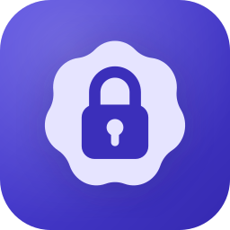

LOKRYour KeePass passwords, in your own Google Drive.
LOKR is a password manager for your existing KeePass database. The file stays in your Google Drive, works offline, and opens in KeePassXC and other KeePass apps too.
No servers, no accounts
LOKR has no backend. Your database is encrypted with your master password and stored only on your devices and in your own Google Drive. LOKR can only see the files you pick or create there.
Made for a family
Everyone keeps their own database; shared databases hold what the family shares, each member unlocking with their own master password. Changes merge entry by entry, and when two people edited the same entry, LOKR asks which version to keep.
Everyday comfort
Quick unlock with fingerprint, face or device PIN, autofill in apps and websites, a strong password generator, one-time codes and attachments.